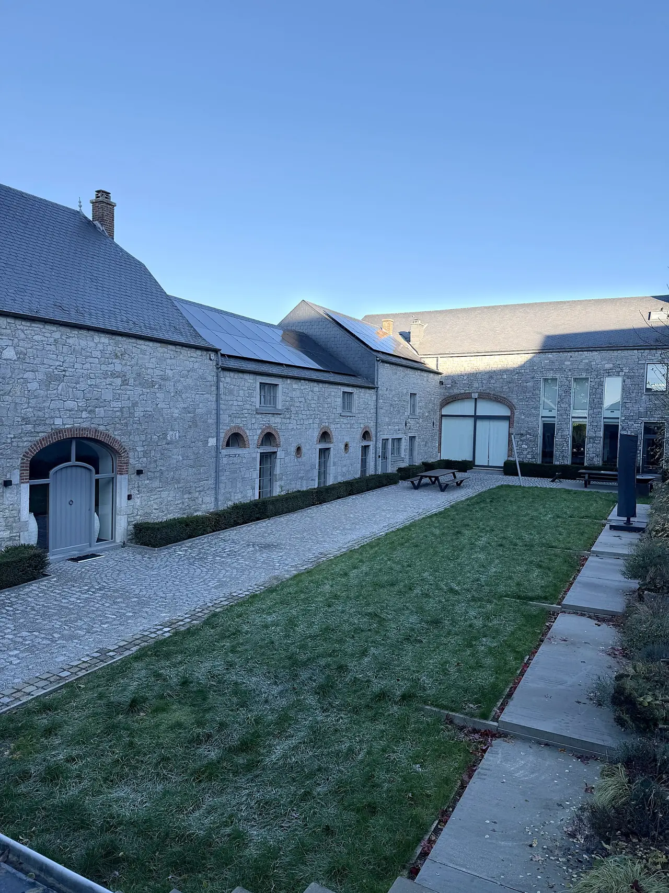

Une ferme en carré, au cœur de Ciney.
Des murs de calcaire, des fenêtres cintrées de brique, des toits d'ardoise autour d'une cour. Voici ce que l'on sait de cette maison, et ce que l'on cherche encore.

La cour intérieure, aujourd'hui partagée par les trois gîtes.
Ce que racontent les pierres
Le Rempart est une ferme en carré : des bâtiments disposés autour d'une cour fermée, un plan que l'on retrouve dans de nombreuses fermes du Condroz. Les façades sont en moellons de pierre calcaire ; plusieurs baies sont encadrées d'arcs de brique ; les toitures sont couvertes d'ardoise.
À l'intérieur, les voûtains de brique posés sur des poutres, visibles dans le gîte 1, témoignent des anciens usages agricoles du bâtiment. La date de construction de la ferme et le nom de ses bâtisseurs ne sont pas connus à ce jour.
La maison n'est pas un monument classé. Elle se trouve à environ cent vingt mètres du seul vestige visible de l'enceinte médiévale de Ciney, la tour d'angle de la rue du Rempart de la Tour, classée en 1982 [4]. Le nom du domaine vient très probablement de ce voisinage.
Les vies de la maison
Chaque étape indique son niveau de certitude et sa source. Nous complétons cette histoire au fil de nos recherches dans les archives.
- Origines
Une ferme du Condroz
On ignore quand la ferme a été bâtie, par qui, et quels en furent les premiers propriétaires. Les archives communales, le cadastre ancien et les actes notariés sont les prochaines pistes.
Inconnu - Avant 2012
La ferme Delvaux
Un habitant de Ciney se souvient d'y être venu enfant chercher du lait, des œufs et du beurre : c'était alors « la ferme Delvaux ». Ce témoignage, publié dans la presse en 2025, n'est pas encore appuyé par une archive datée.
ConfirméTémoignage rapporté [3]
- 2012
Martin Gray s'installe à Ciney
À quatre-vingt-dix ans, l'écrivain Martin Gray, auteur d'Au nom de tous les miens, achète une ferme en carré au centre de Ciney pour en faire sa résidence. L'agent immobilier le décrit comme « un amoureux de patrimoine », qui pense aussitôt aux améliorations à apporter au bâtiment.
ConfirméQue cette ferme soit bien celle de l'Avenue de Namur 6 est très probable : un article de 2025 situe à cette adresse l'ancienne ferme Delvaux devenue la maison de Martin Gray. L'article de 2012 ne cite pas d'adresse.
Probable - 2013
Citoyen d'honneur
Martin Gray, installé en Belgique depuis 2001, est fait citoyen d'honneur de Ciney.
Confirmé - 2016
Le départ de l'écrivain
Martin Gray s'éteint en avril 2016, à quatre-vingt-treize ans, dans sa maison de Ciney. Le bourgmestre salue alors « un grand humaniste ».
Confirmé - 2016 – 2024
De nouvelles mains
La propriété change de propriétaires, et l'on y prépare des projets de réception.
Confirmé - 2025
Une table de douze couverts
La maison accueille un restaurant nommé Le Rempart, conçu comme un hommage à l'histoire de la ferme et à Martin Gray. Cette salle est aujourd'hui devenue le gîte 3.
Confirmé - Aujourd'hui
Trois gîtes autour de la cour
La ferme est partagée en trois maisons pour huit à douze personnes, avec la cour, le jardin et le parking en commun.
Découvrir les trois gîtes
Un écrivain, un témoin
Né à Varsovie en 1922, Martin Gray a raconté dans Au nom de tous les miens la perte des siens dans les camps nazis, puis dans l'incendie de sa maison du sud de la France. Il a créé la fondation Dina Gray, consacrée à la lutte contre les incendies de forêt et à la protection de l'Homme [2].
Nous évoquons son passage au Rempart avec discrétion, par respect pour sa mémoire et pour sa famille.

Une histoire à compléter
| Question | État |
|---|---|
| Date de construction de la ferme | Inconnu |
| Bâtisseurs et premiers propriétaires | Inconnu |
| Usages successifs avant la ferme Delvaux | Inconnu |
| Origine du nom « Le Rempart » | Probable |
| Photographies anciennes de la cour | Inconnu |
Vous avez connu la ferme, possédez une photographie ancienne ou un souvenir ? Écrivez-nous : nous serions heureux de compléter cette page, en citant votre contribution.
Sources
- L'Avenir, « Martin Gray, second résident "surprise" à Ciney », Emmanuel Wilputte, 20 août 2012
- RTBF (Belga), « L'écrivain Martin Gray retrouvé mort à son domicile de Ciney », 25 avril 2016
- La Libre Belgique, « À la découverte du Rempart, à Ciney », Caroline Viatour, 30 mars 2025
- Liste du patrimoine immobilier classé de Ciney (d'après l'Agence wallonne du patrimoine)
Sources consultées le 28 novembre 2026.
Séjourner dans l'histoire.
Trois maisons pour huit à douze personnes, autour de la cour de l'ancienne ferme.
Demander un séjour